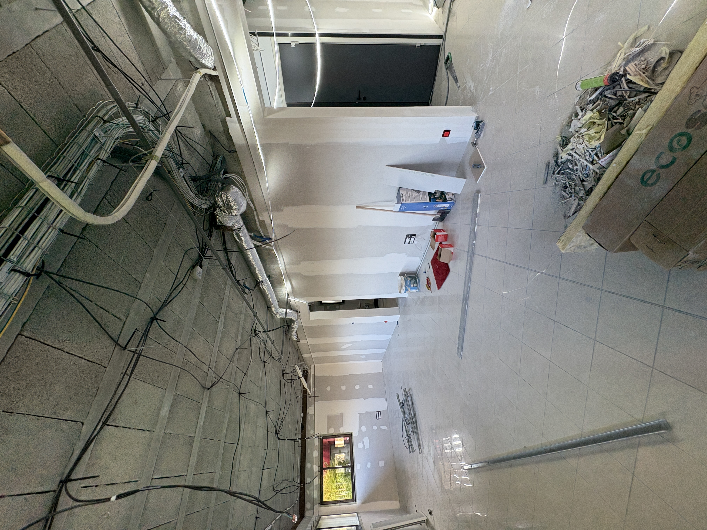
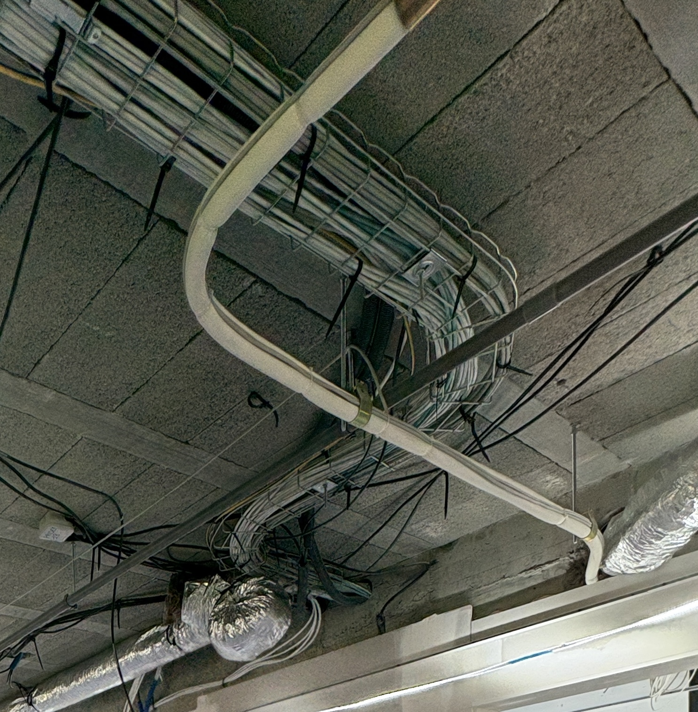

Brassage de baies informatiques
Déploiement physique et organisation des câbles réseau sur chantier.

Contexte
Lors de mon stage en électricité, j'ai été chargé de l'installation physique des câbles réseau sur un chantier. Avant que l'équipe réseau de l'entreprise concernée puisse configurer quoi que ce soit, il fallait d'abord une installation propre et fonctionnelle. Ma mission consistait donc à tirer les lignes depuis les différentes pièces du bâtiment jusqu'au local technique pour assurer la liaison de chaque équipement informatique.
Installation et Raccordement
Le travail a commencé par le tirage d'une soixantaine de câbles RJ45 à travers les structures du bâtiment. J'ai installé et raccordé chaque prise Ethernet murale manuellement, en veillant à la qualité des contacts pour éviter toute perte de signal à l'aide d'un testeur de câble. Chaque câble a été étiqueté lors de son passage dans les murs pour avoir un repérage précis une fois arrivé à la baie.

Baie de Brassage et Organisation
L'étape finale s'est déroulée au niveau de la baie informatique, où j'ai réalisé le brassage complet. J'ai intégré les câbles dans les bandeaux et mis en place une organisation des câbles rigoureuse. Cette organisation n'est pas seulement esthétique : elle est indispensable pour une maintenance efficace.